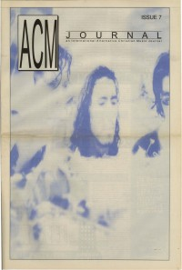

Dighayzoose
|  |
| 1991 ACM Journal |
Media coverage:
- 1991 in ACM Journal "Interview: Dighayzoose"
- Nov 1991 in Harvest Rock Syndicate "Spotlight: A New Wave Comin' In", by Randy S Rocker
- Jan 1992 in Heaven's Metal "Strugglefishin' Upstream", by Doug Van Pelt
- Jul 1993 in Heaven's Metal "Climbing The MagentaMantaLoveTree", by David A. Jenison
- Jul 1993 in Syndicate "Servants of Liberty", by Dave Steiner
- Sep 1994 in Heaven's Metal "Concert Review: Dighayzoose, Hot Pink Turtle", by Frank Franzen
- Nov 2000 in HM "Hardnews: Dighayzoose"
- Jan 2005 in HM "Hardnews: Quick & Concise: Dighayzoose"
Albums & reviews:
1991: demo
- Apr 1991 in Heaven's Metal, by Doug Van Pelt
- Sep 1991 in Harvest Rock Syndicate, by Arsenio Orteza
- Nov 1991 in CCM, by Brian Quincy Newcomb
- Nov 1991 in Heaven's Metal, by Doug Van Pelt
- Dec 1991 in Campus Life, by Jim Long
- Jul 1993 in Syndicate, by Brad Caviness
- Sep 1993 in The Lighthouse, by Beth Blinn
- Sep 1993 in CCM
- Sep 1993 in Heaven's Metal, by Doug Van Pelt
- Fall 1993 in True Tunes News, by Joseph Holton
- 1994 in Cornerstone, by Don Hill
- Feb 1996 in HM, by Brian Vincent McGovern
Books about Dighayzoose
- "Dig Hay Zoose" in The Encyclopedia of Contemporary Christian Music (Mark Allan Powell, 2002)

© 2011 CMnexus. Last updated September 2019. Contact: editor -AT- cmnexus -DØT- org About